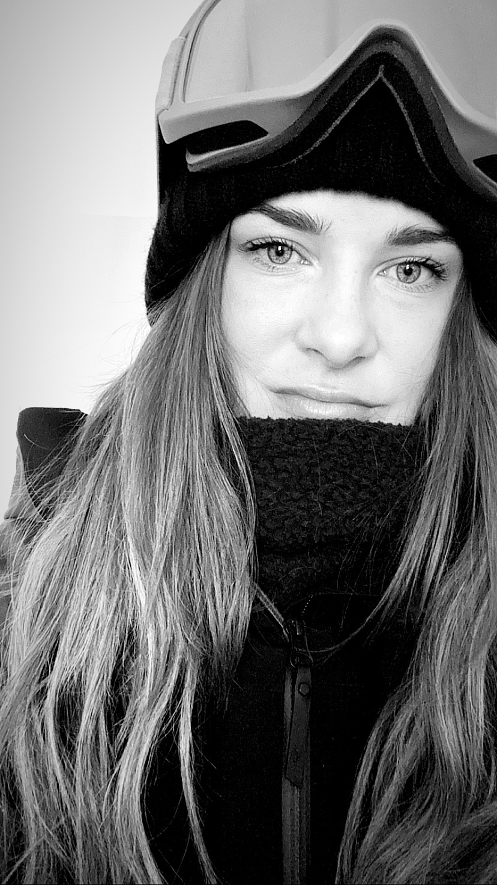
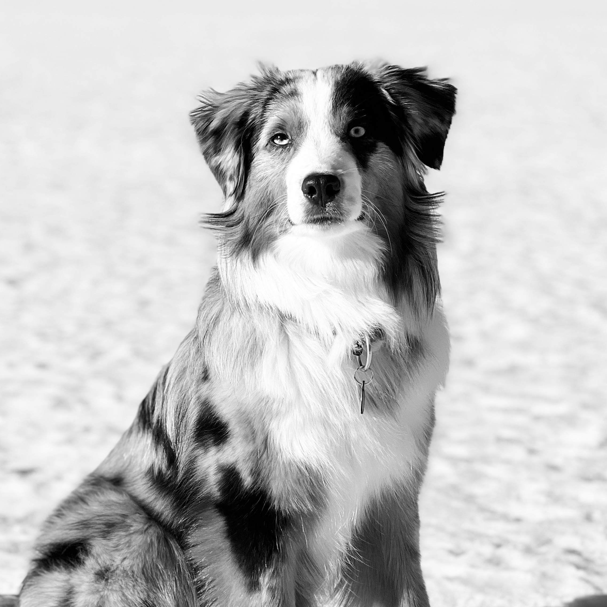
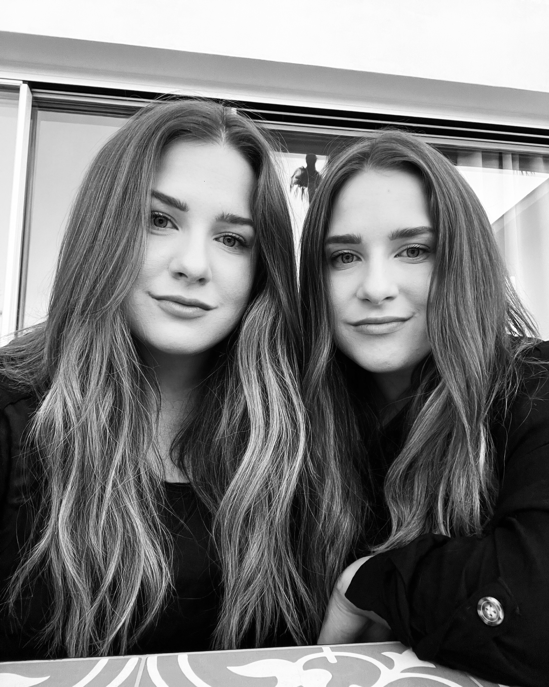

Presentation
Hej! Jag heter Tove Hansson, är 31 år, jag är född och uppvuxen i Sveriges största skidort, Åre. Jag har även en tvillingsyster som heter Lina och vi har gjort det mesta tillsammans i livet. Vi har följt varandra på hemmaplan genom skolgången och tävlingar i alpinskidåkning för att sedan bege oss ut i världen, bland annat på språkresa i Santa Barbara, USA till att flytta till Whistler, Kanada för att ägna oss åt våra fritidsintressen - skidåkning, vandring och utförscykling. Jag har även en vallhund som heter Loui som är av rasen Miniature American Shepherd. Han är en ganska energisk liten kille och vi brukar ägna mycket tid ute i skogen eller uppe på fjället.
Under fliken "Min hobby" kommer jag berätta vidare om mina intressen och min flytt till de kanadensiska bergen.



Min väg till studierna
Innan jag började studera arbetade jag inom turism, framför allt inom hotell- och restaurangbranschen i Åre. Efter några år började både jag och min syster fundera och diskutera utbildning och om vi skulle byta inriktning som i framtiden kan ge oss nya möjligheter och kunskap.
Mitt intresse för IT väcktes när en gemensam vän till oss tipsade om webbutveckling och systemvetenskap. Vi båda blev intresserade och nu studerar hon systemvetenskap vid Örebro Universitet och jag studerar nu webbutveckling på distans här på Mittuniversitetet.